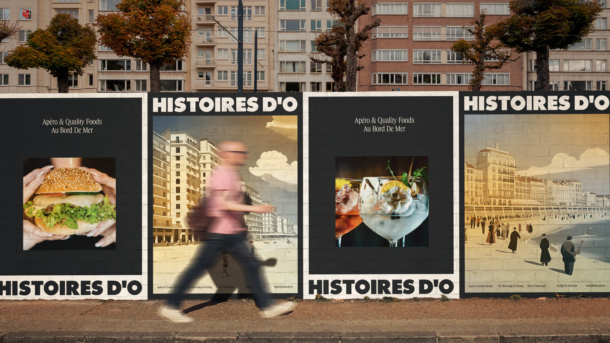
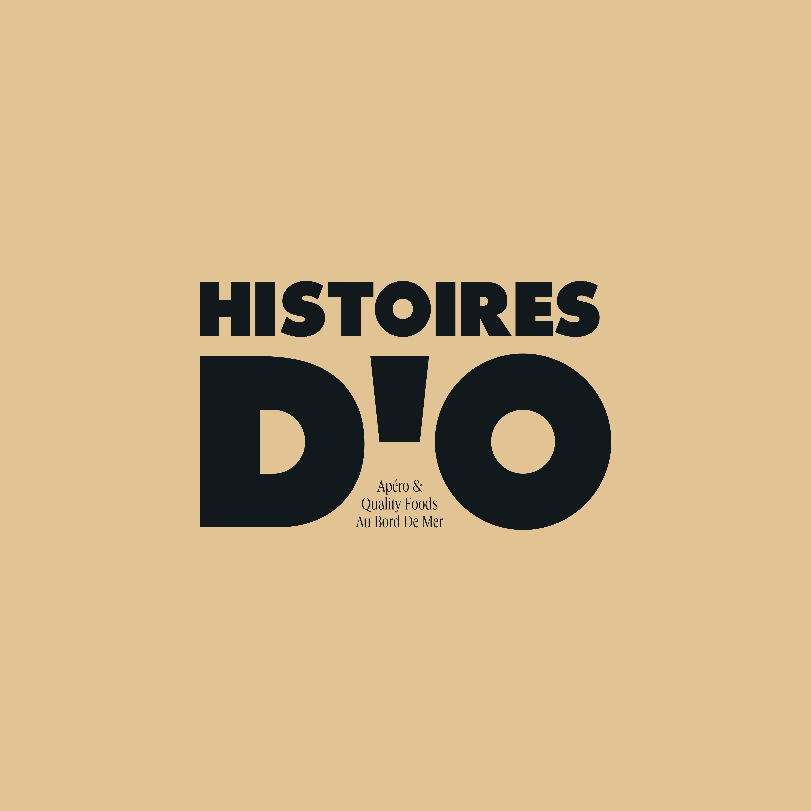
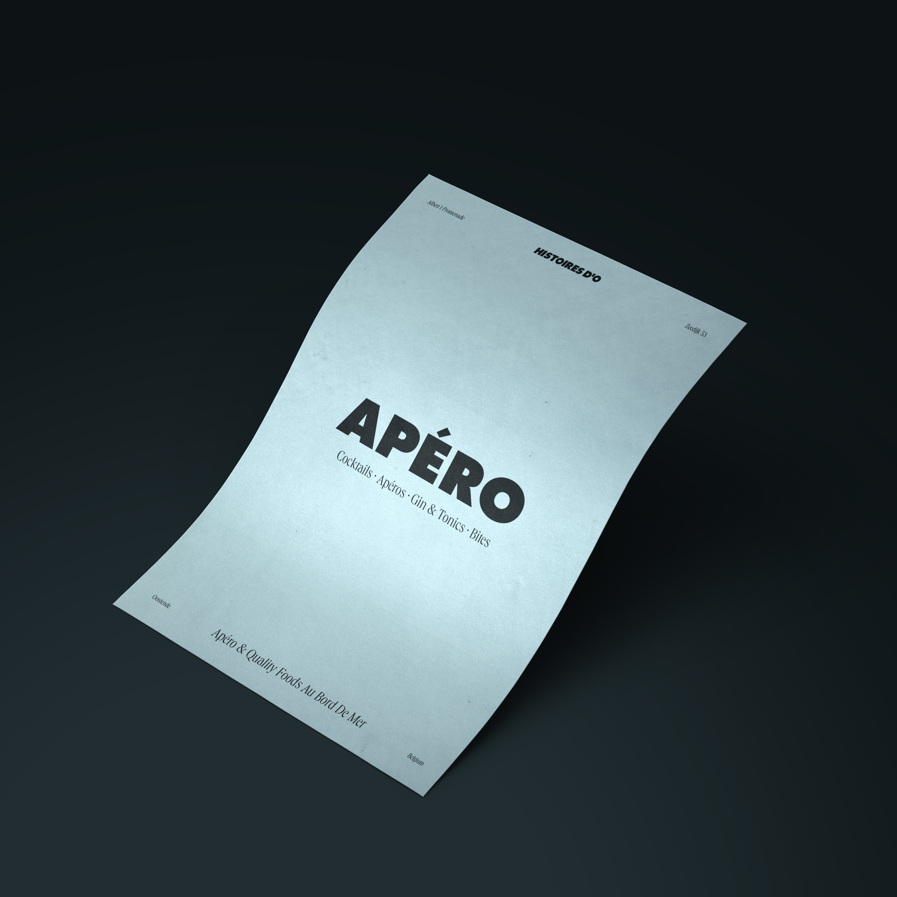

november 2023
Het nieuwe gezicht van Histoires d'O
Een nieuwe identiteit, menukaarten en een vernieuwde website

Met veel plezier onthullen we de complete rebranding van Histoires d'O, het charmante restaurant aan zee in Oostende. Met een gloednieuwe identiteit, vernieuwde menukaarten en een geüpdatete website staat Histoires d'O klaar om zijn positie te versterken als dé bestemming voor heerlijke apero's en creatieve keuken.
Met een nieuwe kleurencombinatie recht uit de golden hour op hun terras gingen we aan de slag om het merk een warme en eigentijdse look te geven. We ontwierpen ook exclusieve posters van Oostende voor de eerste bezoekers, als aandenken aan hun bezoek.
Ontdek het nieuwe gezicht van genieten aan zee!

